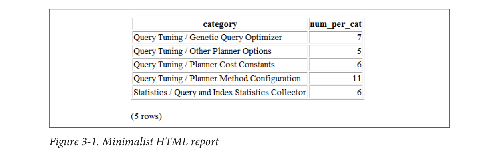

\connect postgresql_book
CREATE TABLE dir_list (filename text);
\copy dir_list FROM PROGRAM 'dir C:\projects /b'Hubert Lubaczewski has more examples of using \copy. Visit Depesz: Piping copy to
from an external program.
Basic Reporting
Believe it or not, psql is capable of producing basic HTML reports. Try the following and check out the HTML output, shown in Figure 3-1.
psql -d postgresql_book -H -c
"SELECT category, count(*) As num_per_cat
FROM pg_settings
WHERE category LIKE '%Query%'
GROUP BY category
ORDER BY category;" -o test.html
Not too shabby. But the command outputs only an HTML table, not a fully qualified HTML document. To create a meatier report, compose a script, as shown in Example 3-11.
\o settings_report.html
\T 'cellspacing=0 cellpadding=0'
\qecho '<html><head><style>H2{color:maroon}</style>'
\qecho '<title>PostgreSQL Settings</title></head><body>'
\qecho '<table><tr valign=''top''><td><h2>Planner Settings</h2>'
\x on
\t on
\pset format html
SELECT category, string_agg(name || '=' || setting, E'\n' ORDER BY name) As set-
tings 54|Chapter 3: psql